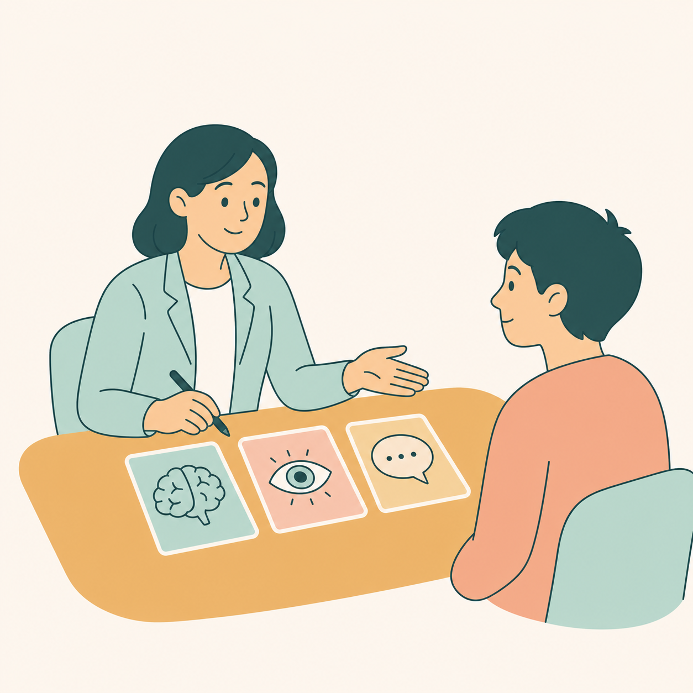
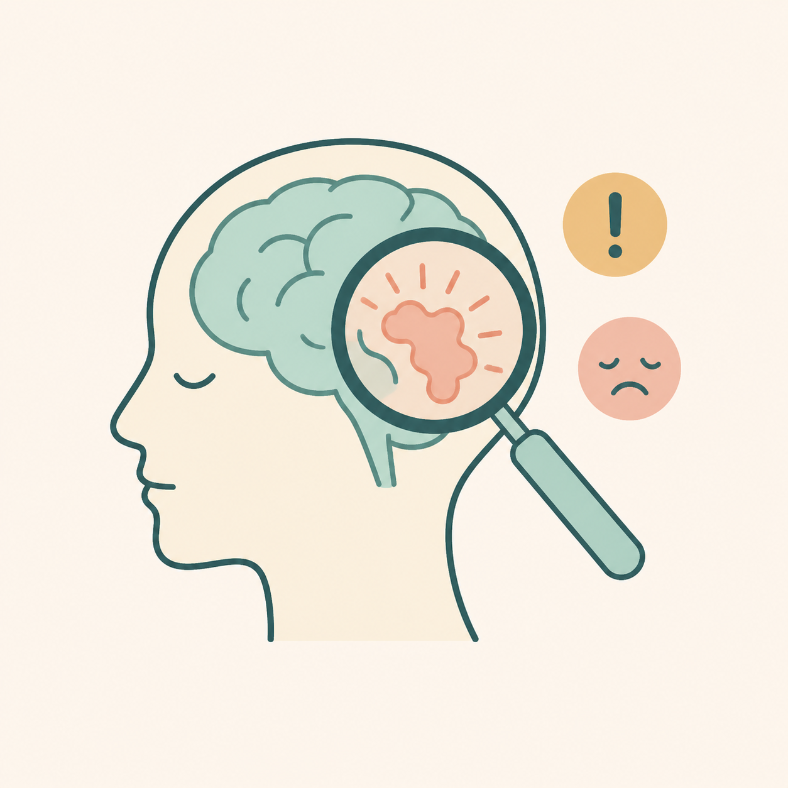
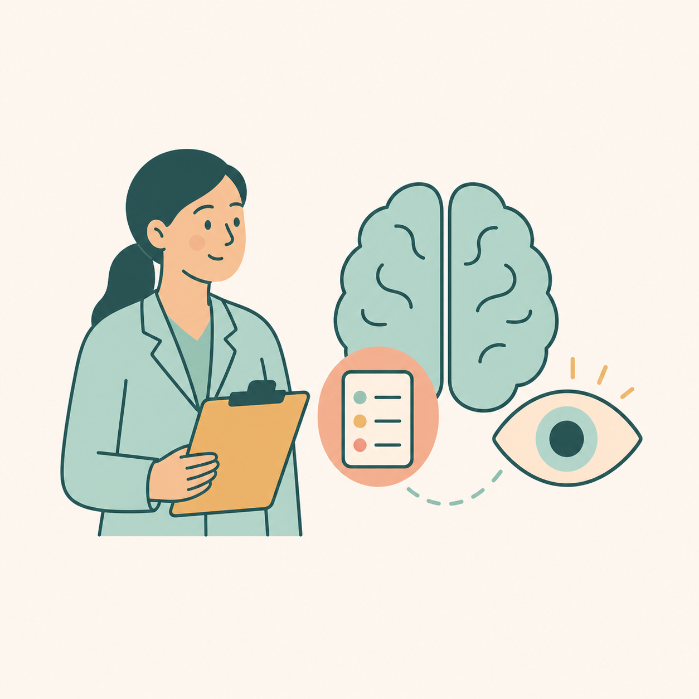
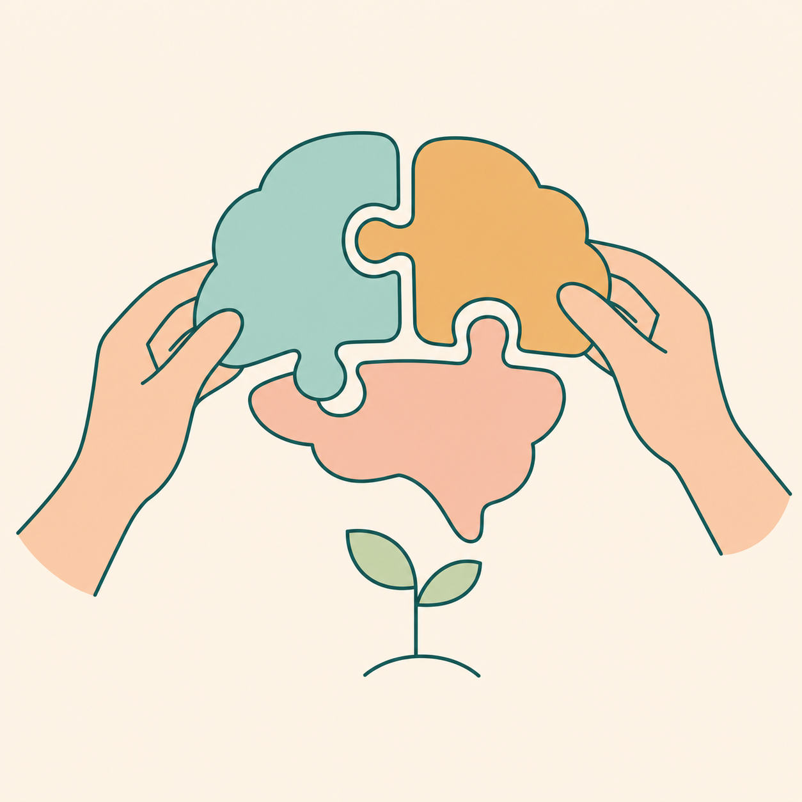
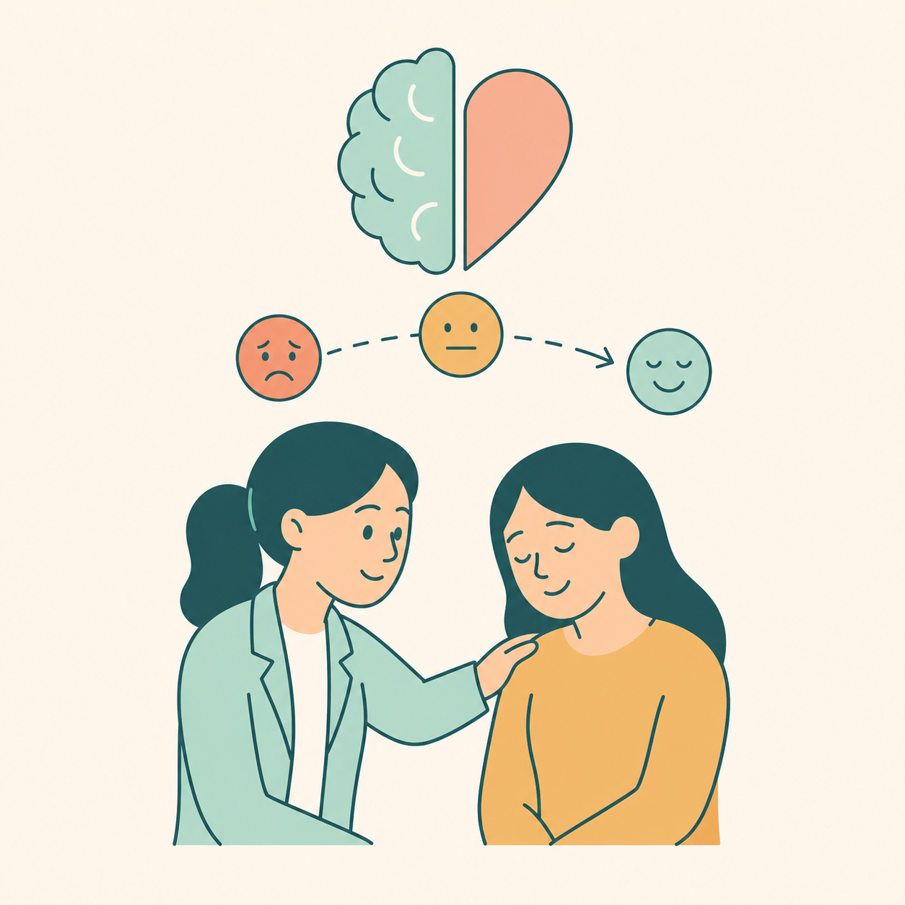
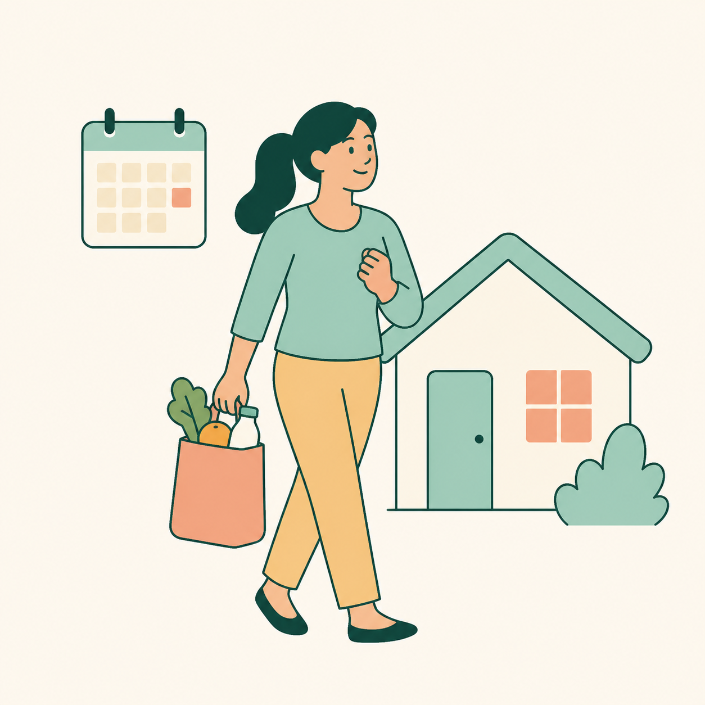
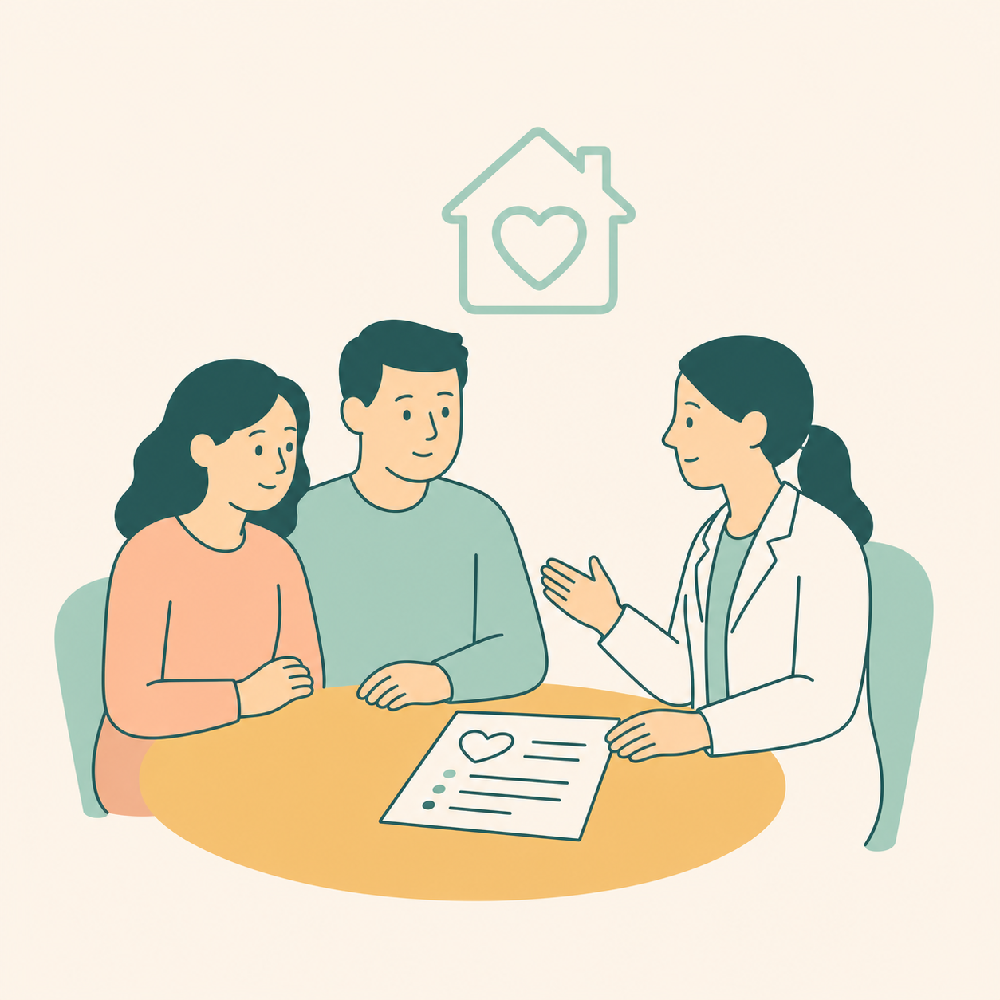
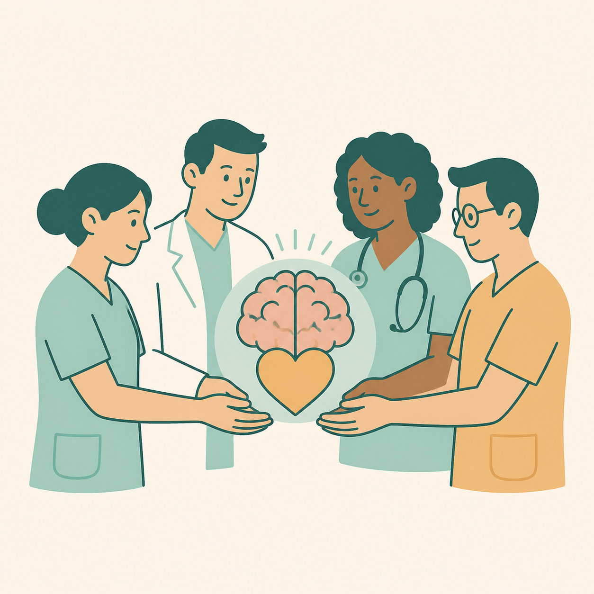
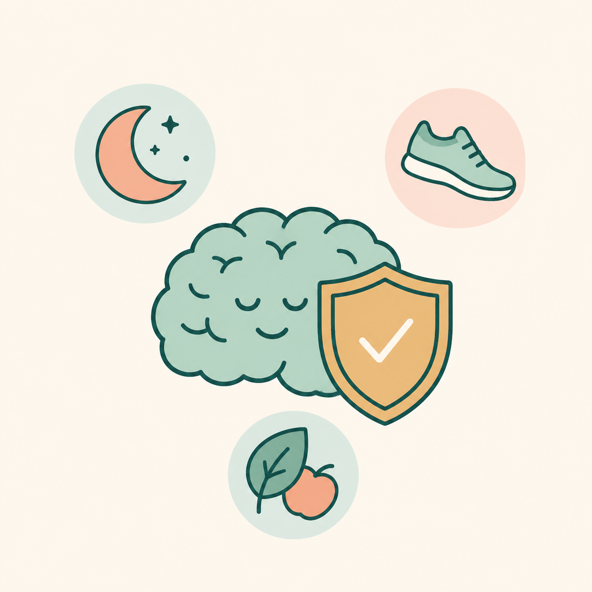

Neuropsicología clínica
Es una especialidad de la Psicología que estudia la relación entre el funcionamiento del cerebro y la conducta humana. Analiza procesos como la memoria, atención, lenguaje, emociones y comportamiento (Caro, 2023).

Evaluar
Explora memoria, atención, lenguaje, percepción y razonamiento mediante pruebas neuropsicológicas.
Comprender capacidades
Detectar
Reconoce cambios cognitivos, emocionales o conductuales relacionados con una lesión o enfermedad cerebral.
Reconocer cambios
Diagnosticar
Contribuye a determinar el tipo y grado de afectación mediante pruebas, entrevista y observación clínica.
Precisar necesidades
Rehabilitar
Diseña estrategias para recuperar, fortalecer o compensar funciones afectadas y alcanzar objetivos significativos.
Recuperar y compensar
Atender emociones y conducta
Acompaña cambios en las emociones, la personalidad, la motivación, las relaciones sociales y el comportamiento.
Acompañamiento integral
Mejorar la vida diaria
Facilita la organización, la toma de decisiones y el desempeño seguro en las actividades cotidianas.
Funcionalidad cotidiana
Orientar
Ofrece a familiares y personas cuidadoras información clara, estrategias prácticas y pautas de acompañamiento.
Apoyo familiar
Favorecer la autonomía
Promueve la participación activa, la toma de decisiones y la mayor independencia posible en cada contexto.
Participación e independencia
Prevenir
Fomenta sueño adecuado, actividad física, estimulación cognitiva y otros hábitos que protegen la salud cerebral.
Protección cerebralDar seguimiento
Valora los avances, revisa los objetivos y ajusta la intervención según la evolución y las necesidades de la persona.
Revisar y ajustarReferencias
Caro, J. (2023). Aplicaciones de la psicología del desarrollo en los ámbitos de la Psicología. Universidad San Marcos.
Junqué, C. y Barroso, J. (1994). Neuropsicología. Síntesis.
¿Por qué es importante?
Contribuye a mejorar la autonomía, la recuperación, la adaptación al entorno y la calidad de vida de las personas con lesiones o enfermedades cerebrales.